Акции «РазДельного Сбора» в Петербурге проходят каждую первую субботу
месяца. Точки работают в разных районах
города,
анонс со всеми адресами и временем работы публикуется в соцсетях движения во вторник перед акцией.
Пожалуйста, прочитайте эту статью внимательно – это позволит вам не нести на акцию то, что мы не сможем принять. Если
у вас есть вопросы, их всегда можно задать, написав в сообщения группы вконтакте
или через форму обратной формы
на сайте.
На акциях мы принимаем твёрдый пластик с маркировкой 5, мягкий пластик с маркировками 2, 4 и 5, упаковочный пенопласт
от техники, упаковку Tetra Pak и её аналоги, CD- и DVD-диски.
Всё остальное можно сдать в контейнеры и пункты, отмеченные на карте Recyclemap. На карте
удобно искать пункты приёма
стекла, бумаги, металла, опасных отходов, пластика с маркировкой «1» и «2». Если нужно найти пункты приёма сложных
видов сырья — например, фольги или аэрозольных баллончиков — вам поможет статья «А куда сдавать…».
А теперь —о том, что мы принимаем на акциях в Петербурге.
Пластик бывает твёрдый и мягкий. Твёрдый — это жёсткие изделия (бутылочки, флакончики, коробочки, ведёрки и т.п.).
Мягкий — это пакеты, плёнка и так далее.
Кроме того, пластмассы — это огромная группа материалов, разные изделия сделаны из разных видов пластика и, к
примеру, пластиковая бутылка и пластиковый стаканчик не могут быть переработаны вместе — у них разные свойства. Для
того чтобы можно было ориентироваться в типах полимеров, существует маркировка — это цифра в треугольнике из
стрелок, обычно она находится где-то на дне изделия, может быть также на этикетке или на ручках пакетов. Выглядит
так:
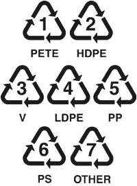
Иногда вместо цифры в треугольнике может стоять буквенное обозначение. Например, HDPE — это то же самое, что «2».
Подробную информацию о маркировках можно найти в нашем гиде.
«РазДельный Сбор» принимает на акциях в Петербурге твёрдый пластик с
маркировкой 5, а ещё
упаковочный пенопласт от техники с маркировкой 6 (другие изделия с маркировкой 6 не
принимаются!), пакеты и плёнку.
«5 в треугольнике» (полипропилен, PP, ПП)
Принимаем изделия из твёрдого пластика с маркировкой «5». Примеры изделий из полипропилена:
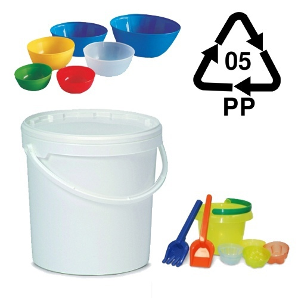
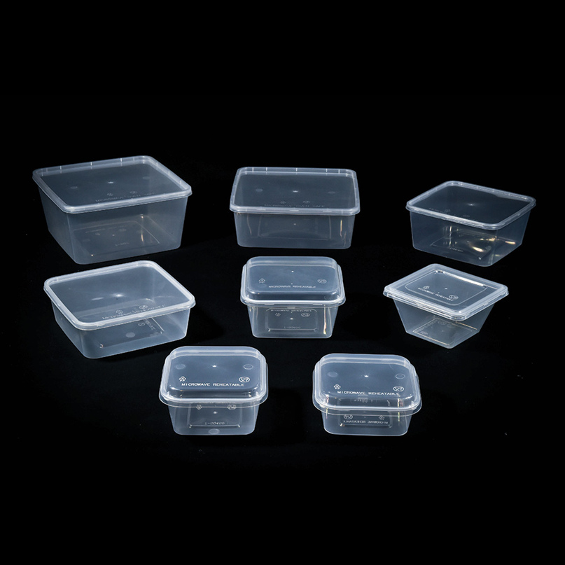
"Обычно это стаканчики, ведёрки, коробочки. В любом случае нужно искать маркировку.
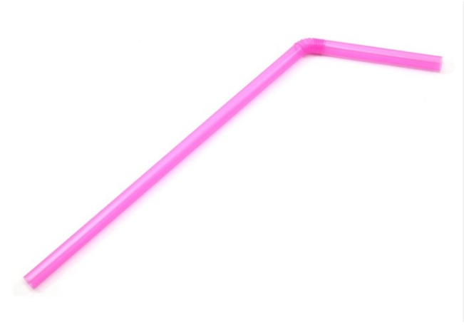
Ещё из полипропилена делают трубочки для коктейлей. Их тоже берём (на трубочках маркировку можно не искать).
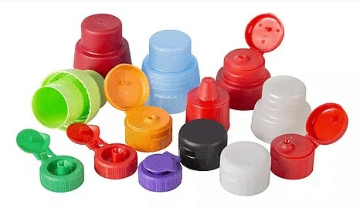
Некоторые крышки от бытовой химии делают из полипропилена (нужно искать маркировку). Крышки от флаконов с
бытовой химией могут быть сделаны из полипропилена. Если на них есть соответствующая маркировка, их можно сдать
с «пятеркой».
Не принимаются круглые крышки от сметаны, творога и т.п., даже если на них есть маркировка. К
сожалению, такие крышки бывают из множества разнообразных материалов, и приёмщик на досортировке их выбрасывает. Вот
такие крышки:
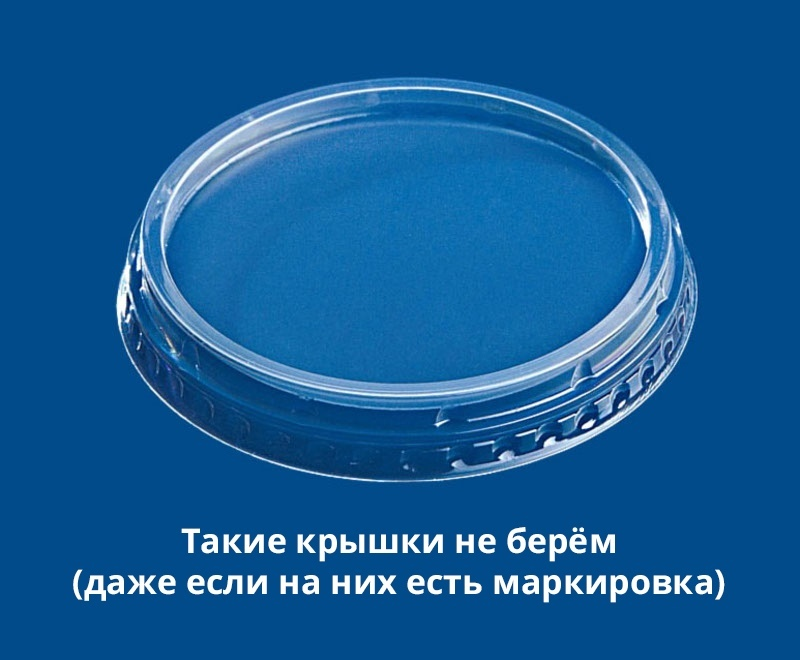
Как подготовить к сдаче твёрдый пластик:
Вымыть. Не у всех переработчиков есть мойки, а остатки химии и пищи портят сырьё —
соответственно, грязные
отходы могут отправиться в мусор. Кроме того, участники на акциях кладут стаканчик в пакет и отходят — а вот
волонтеры стоят с мешком несколько часов; разлитая бытовая химия очень сильно пахнет, а за несколько часов может
вызвать раздражение кожи и глаз. Такие прецеденты были. Остатки пищи ничего не разъедают — зато пахнут будь
здоров.
Смять или вложить друг в друга. Стаканчики хорошо штабелируются, небольшие ведерки можно
сложить в ведёрко
побольше, трубочки засунуть в контейнер. Чем компактнее сложено вторсырьё, тем меньше мы тратим мешков и тем
меньше заказываем машин, которые выделяют меньше выхлопных газов. Кроме того, сплющенное сырьё вам будет удобнее
хранить, ведь оно потребует куда меньше пакетов и контейнеров.
Снять крышки. Они часто сделаны из другого пластика. Крышки можно сдать в соответствии
с маркировкой на крышке.
Снять этикетки. Лайфхак: если этикетку сложно снять, можно нагреть флакон (например, налить в
него горячей воды) — это размягчит клей и наклейку будет гораздо легче убрать.
Некоторые этикетки коварно маскируются под часть контейнера, но их всё равно нужно снять. Например,
термоусадочную этикетку — это тонкая пластиковая пленка, которая плотно облегает изделие, повторяя его
форму.
Она тоже сделана из другого вида пластика (ПВХ).
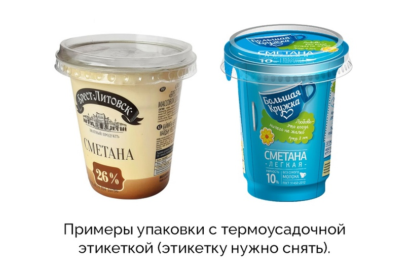
Бумажные этикетки — некоторые стаканчики бывают обернуты в тонкий картон; его нельзя сдавать с пластиком,
такую этикетку нужно снять и сдать с макулатурой.
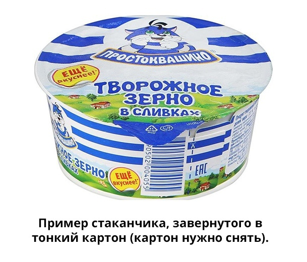
Пенопласт с маркировкой «6 в треугольнике»
Принимаем упаковочный пенопласт от техники, вот такой:
Не принимаются любые другие изделия с маркировкой «6», чёрный пенопласт, пенопласт с маркировкой
«5».
Мягкий пластик
Мягкий пластик — это пакеты, плёнка и т.п. Принимаем такой пластик с маркировкой 2, 4 и 5, а еще некоторые пакеты и
плёнку без маркировки.
Берём: пакеты-майки, пакеты из магазинов, тонкие фасовочные пакетики, пищевую, упаковочную,
«парниковую» пленку,
упаковки от круп, макаронных и кондитерских изделий, хлеба, пленку от сигаретных пачек, этикетки от ПЭТ-бутылок,
«пупырчатаю» пленку.
Примеры того, что берём:
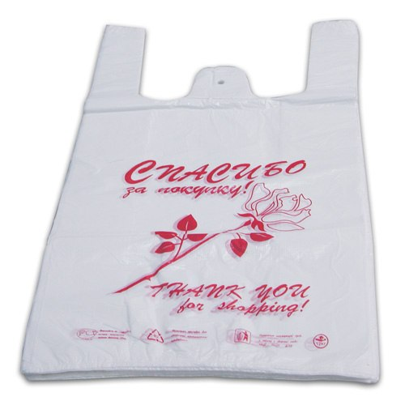
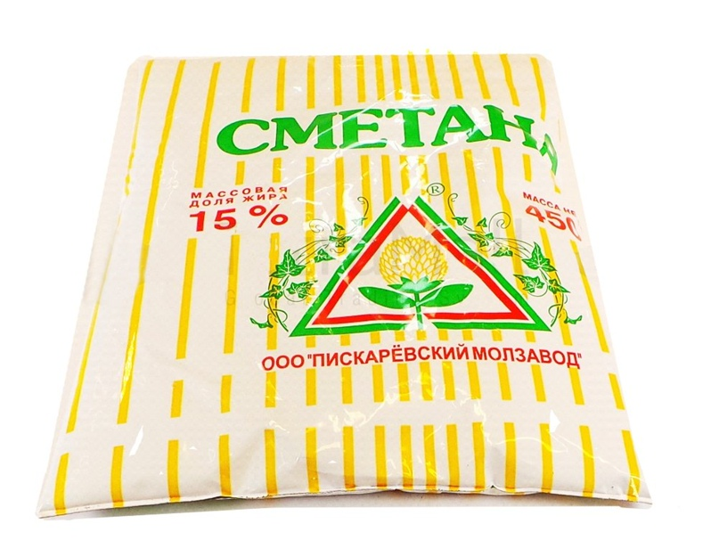
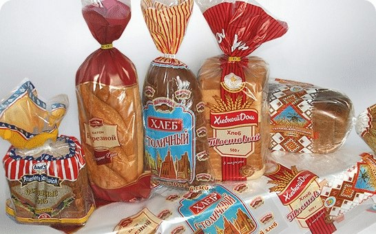
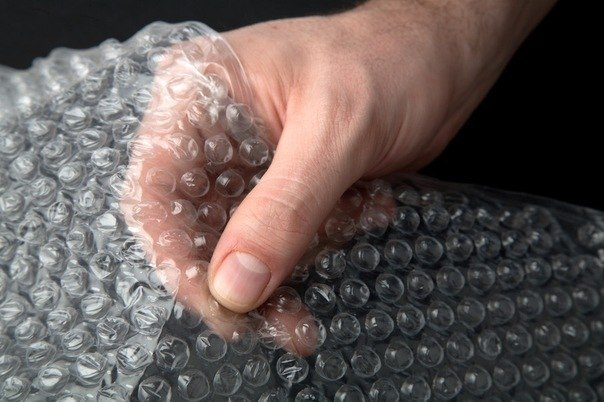
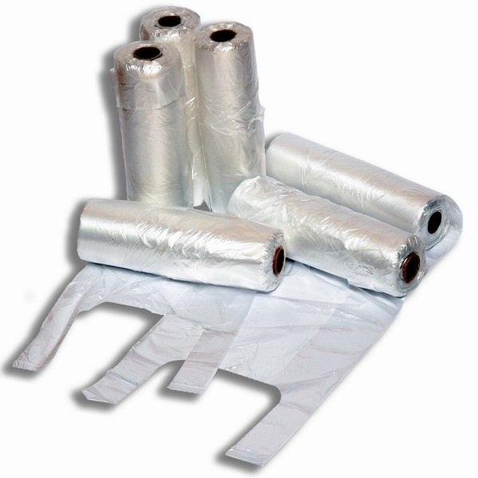
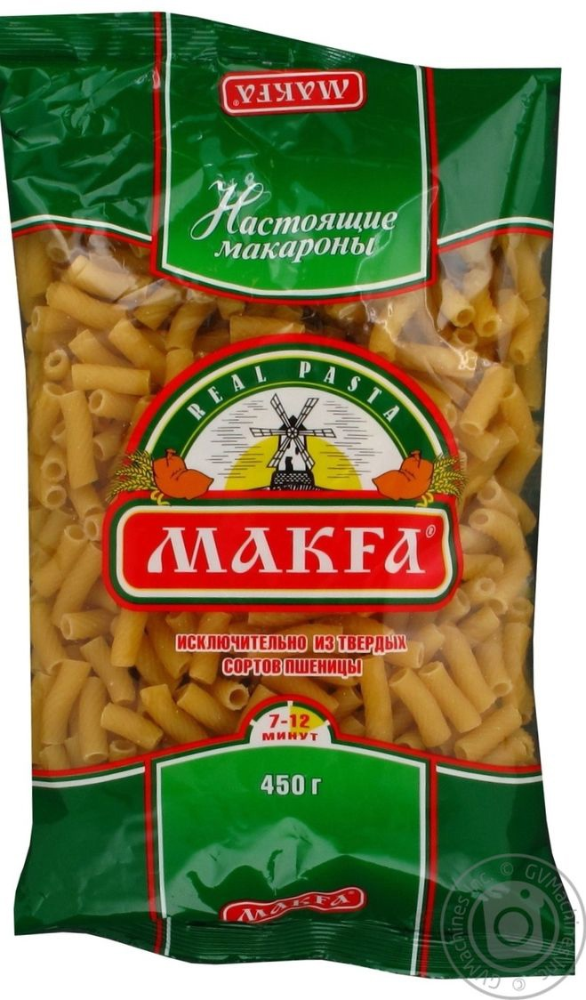
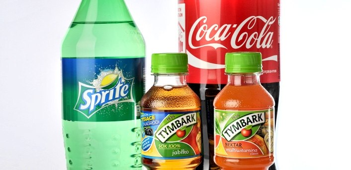
Как подготовить к сдаче мягкий пластик:
Вытряхнуть крошки, грязные пакеты — вымыть и высушить. На плёнке не должно быть следов пищи,
жира и т.п. — органика портит сырьё, а крошки забивают оборудование переработчиков.
Вырезать все этикетки
— ценники, бумажки, наклейки и так далее. Они, как правило, сделаны или из бумаги (которая при переплавке может
загореться) или из другого вида пластика (который загрязняет сырьё). Так что все пакеты с этикетками
отправляются в мусор — к сожалению, возможности вырезать их ни у волонтеров на акциях, ни у рабочих
переработчика нет. Если вы хотите, чтобы ваше сырьё ушло в переработку, наклейки и ценники нужно убрать
самостоятельно.
Поделить на два вида: бесцветный прозрачный полиэтилен и всё остальное.
Бесцветный полиэтилен должен быть совсем бесцветным, прозрачным, не белым, без надписей и картинок.
Примеры: плёнка-пупырка, стретч-плёнка, прозрачные фасовочные пакетики. Полиэтилен хорошо тянется и почти не шуршит.
Всё, что окрашено в какой бы то ни было цвет (в том числе белый или бледный), имеет надписи или
рисунки нужно сдавать с цветной плёнкой. То же относится к
шуршащим и не тянущимся пакетам — например, из-под круп или макарон — они сделаны из полипропилена.
Отправляйте их в мешок к плёнке-микс.
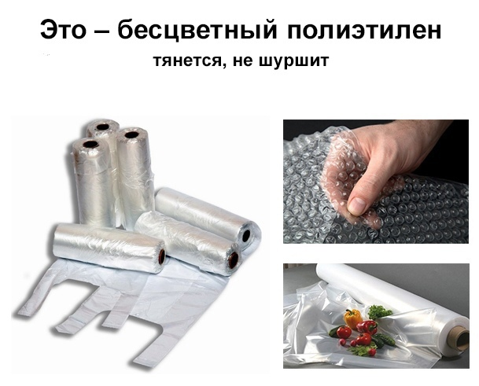
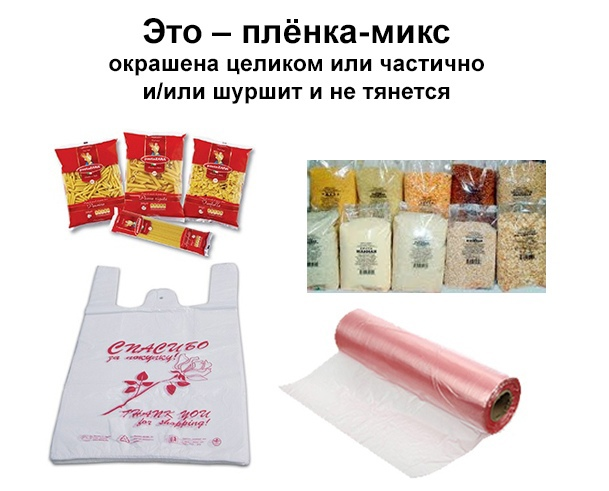
Не принимаются:
упаковка с маркировкой «PET» или смесь «PET+(что угодно)»;
упаковка, маркировка которой начинается с «C/» или просто содержит «/» (например, С/LDPE) — это смесь
пластиков;
упаковка с маркировкой «7 в треугольнике» (это тоже смесь пластиков);
пакеты с пометкой «биоразлагаемые» (присадка, обеспечивающая «биоразлагаемость», не позволяет их
переработать);
любая фольгированная упаковка (с блестящим слоем, например, от чипсов) — потому что в ней есть примеси;
термоусадочная пленка (она сделана из ПВХ, который наш переработчик не берёт);
канцелярские плотные папки (они слишком плотные и часто сделаны из ПВХ);
шторки для ванной (они слишком плотные и почти всегда сделаны из ПВХ);
надувные изделия типа кругов для плавания и т.п. (слишком плотные и почти всегда сделаны из ПВХ);
мягкие упаковки «дой-пак» от майонеза, кетчупа и т.п. (они плотнее пакетов и требуют другого оборудования для
переработки);
пакеты из-под корма для животных (они тоже очень плотные и часто с примесями);
упаковки от заморозки, даже если на них стоит маркировка (в них почти всегда есть присадки, предотвращающие
ломкость пластика при низких температурах, и далеко не всегда эти присадки указываются на упаковке);
мягкие сетки от овощей и фруктов;
любые пластиковые тюбики;
плетёные мешки (зелёные, белые) — от сахара и круп, для строительного мусора и т.п.
Упаковка Tetra Pak и её аналоги (Elopak, Pure-Pak и т.п.)
В такие упаковки часто разливают молоко, кефир, соки и т.п. Это композитная упаковка, состоящая из бумаги, пластика и
— иногда — алюминия. Вот примеры такой упаковки:
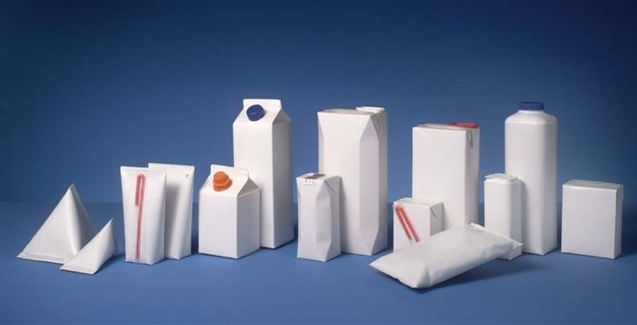
Как подготовить к сдаче Tetra Pak и аналоги:
Сполоснуть, чтобы не оставалось запаха и остатков содержимого. Для этого упаковку удобно
разрезать.
Высушить.
Сплющить.
По желанию можно отделить от упаковки крышки (и сдать с мелкими изделиями из полиэтилена,
маркировка 2) и трубочки (и сдать вместе с полипропиленом, маркировка 5). Но это не обязательно.
Внимание!
Горлышки от тетрапака отделять не надо.
CD/DVD диски
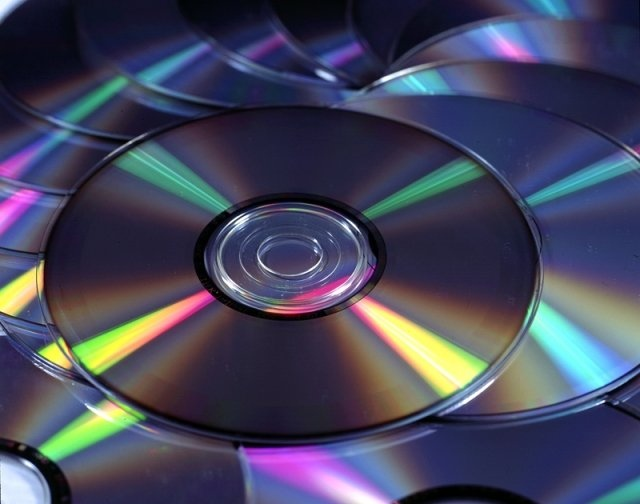
Принимаем любые старые ненужные CD- и DVD-диски, можно сломанные, поцарапанные и т.п. Диски сдаются без
коробочек.